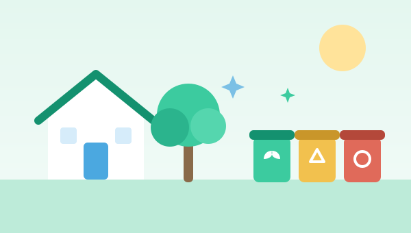
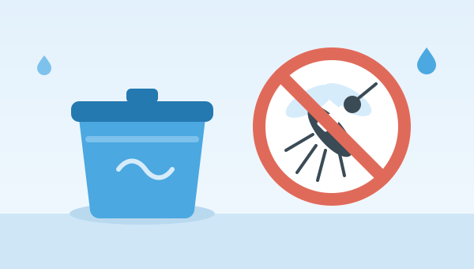
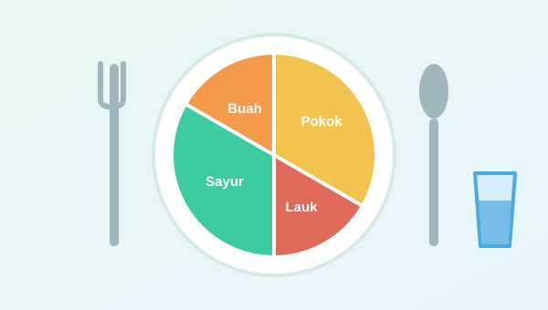
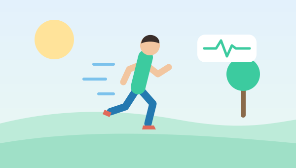

Pentingnya Menjaga Kebersihan Lingkungan
Lingkungan yang bersih mengurangi tempat berkembangnya kuman, nyamuk, dan hewan pembawa penyakit.
Kesehatan masyarakat berawal dari kebiasaan sederhana di rumah, sekolah, dan lingkungan sekitar. SehatBersama menghadirkan informasi kesehatan yang ringkas, mudah dipahami, dan dapat diakses kapan saja melalui perangkat digital Anda.
24
Artikel edukasi kesehatan
8
Topik kesehatan dibahas
30
Tips kesehatan harian
6
Program edukasi kesehatan
Angka di atas merupakan data ilustratif untuk keperluan demonstrasi proyek, bukan statistik resmi atau data kesehatan aktual.
Informasi dasar kesehatan masyarakat yang disusun ringkas agar mudah dipahami oleh keluarga, pelajar, dan mahasiswa.

Lingkungan yang bersih mengurangi tempat berkembangnya kuman, nyamuk, dan hewan pembawa penyakit.

Gerakan 3M Plus menjadi langkah utama memutus siklus hidup nyamuk Aedes aegypti di sekitar rumah.

Panduan "Isi Piringku" membantu keluarga mengatur porsi sayur, buah, makanan pokok, dan lauk pauk.

Bergerak secara teratur menjaga kebugaran jantung, otot, dan kesehatan mental dalam jangka panjang.
Centang kebiasaan yang sudah Anda lakukan hari ini. Progres tersimpan di perangkat Anda dan otomatis dimulai ulang setiap hari.
Hitung IMT untuk mengetahui gambaran awal status berat badan orang dewasa (usia 18 tahun ke atas).
Masukkan berat dan tinggi badan, lalu tekan Hitung IMT untuk melihat hasilnya.
IMT Anda
0
-| IMT | Kategori |
|---|---|
| < 17,0 | Kurus (kekurangan berat badan tingkat berat) |
| 17,0 – 18,4 | Kurus (kekurangan berat badan tingkat ringan) |
| 18,5 – 25,0 | Normal |
| 25,1 – 27,0 | Gemuk (kelebihan berat badan tingkat ringan) |
| > 27,0 | Gemuk (kelebihan berat badan tingkat berat) |
Penting: IMT hanyalah alat skrining awal, bukan diagnosis medis. IMT tidak membedakan massa otot dan lemak, sehingga interpretasinya berbeda pada anak-anak dan remaja (menggunakan IMT menurut umur), ibu hamil, atlet, lansia, serta kondisi kesehatan tertentu. Untuk penilaian yang tepat, konsultasikan dengan tenaga kesehatan.
Banyak penyakit dapat dicegah atau dikendalikan melalui perubahan kebiasaan sehari-hari dan pemeriksaan kesehatan secara rutin.
Disebabkan virus dengue yang ditularkan melalui gigitan nyamuk Aedes aegypti, yang berkembang biak di air jernih yang tergenang.
Tekanan darah tinggi sering tidak bergejala, padahal dapat meningkatkan risiko penyakit jantung, stroke, dan gangguan ginjal.
Diabetes tipe 2 berkaitan erat dengan pola makan, berat badan, dan aktivitas fisik. Pola hidup CERDIK membantu menurunkan risikonya.
Jika mengalami gejala seperti demam tinggi mendadak, sakit kepala hebat, atau rasa haus dan sering buang air kecil yang tidak biasa, segera periksakan diri ke fasilitas pelayanan kesehatan terdekat.
SehatBersama merupakan proyek edukasi yang dikembangkan untuk mendukung pemanfaatan teknologi kesehatan digital dalam meningkatkan literasi kesehatan masyarakat. Melalui media web yang ringan dan mudah diakses, informasi kesehatan dasar disajikan secara ringkas, visual, dan interaktif.
Website ini dibuat sebagai tugas mata kuliah Teknologi Kesehatan Digital dan ditujukan bagi masyarakat umum, mahasiswa, serta pelajar.
SehatBersama adalah proyek edukasi mahasiswa, bukan layanan diagnosis, pengobatan, atau konsultasi medis profesional. Website ini tidak berafiliasi dengan rumah sakit, puskesmas, maupun tenaga kesehatan mana pun.
Seluruh informasi bersifat umum dan tidak menggantikan saran tenaga kesehatan. Untuk keluhan kesehatan, silakan menghubungi fasilitas pelayanan kesehatan terdekat.